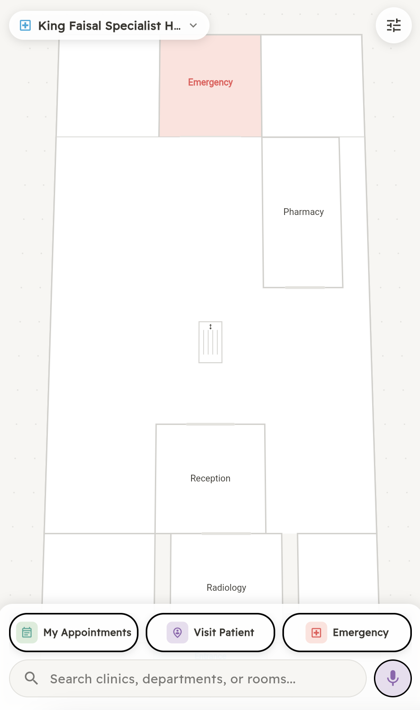
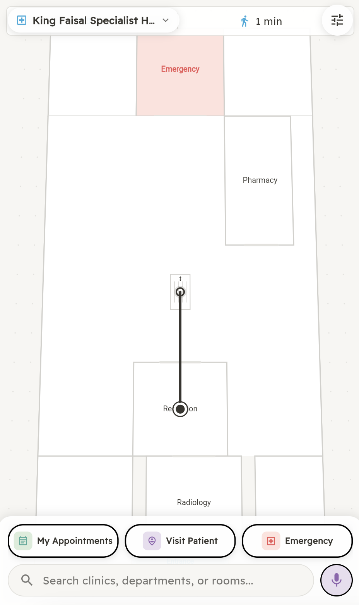
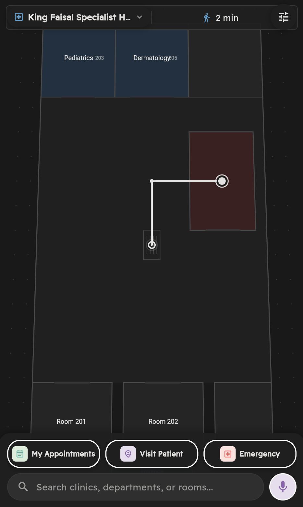
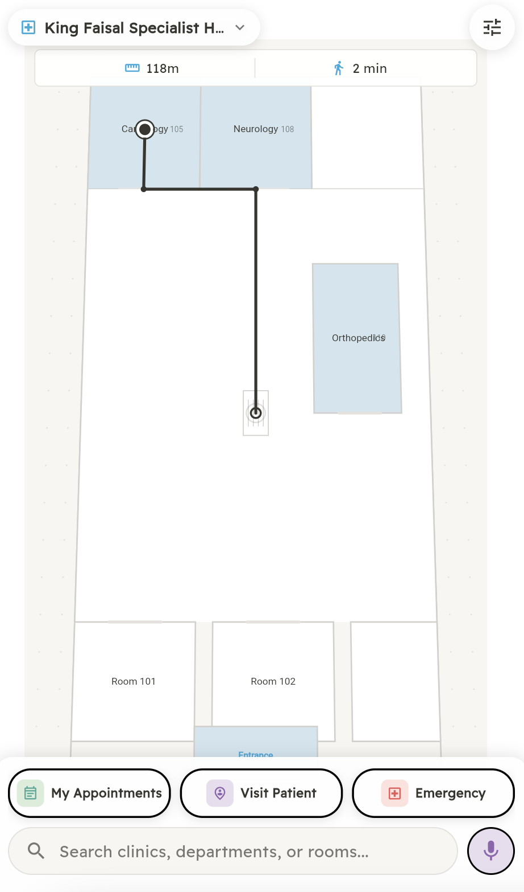
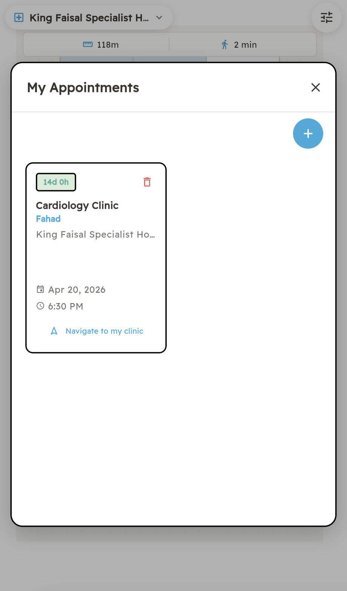
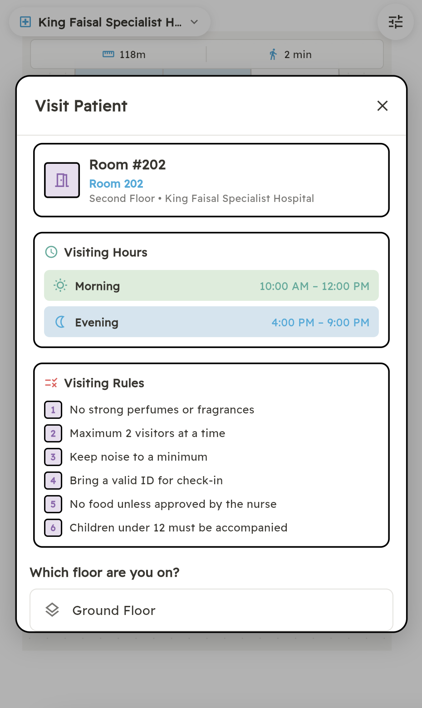
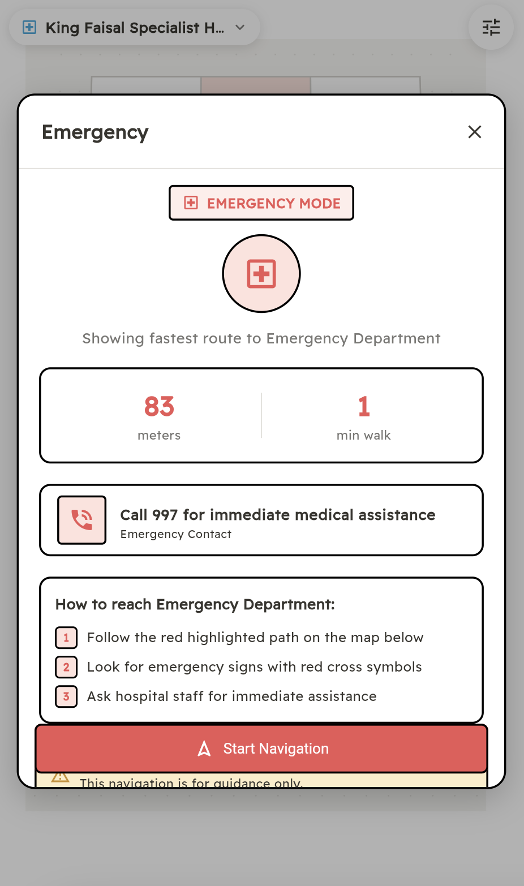
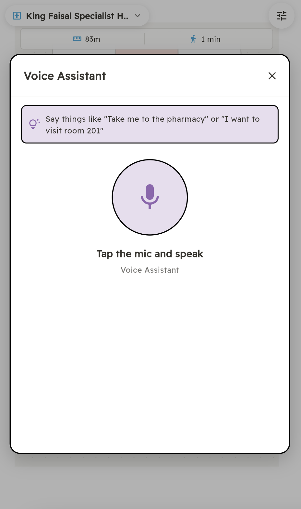
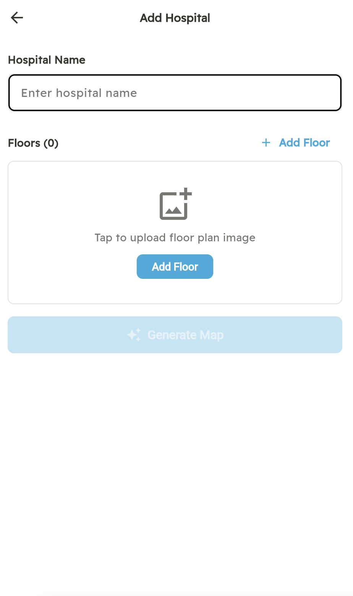

Process

Brainstorm Sketching
Early-stage wireframes exploring user flows — from the first screen to appointment management and patient visit flows.
Hospital indoor navigation platform that helps patients, visitors, and staff find their way inside large Saudi hospitals.



Patients — especially elderly and first-time visitors — get lost inside large hospitals. They miss appointments, panic during emergencies, and waste time asking for directions. In Saudi Arabia, major hospitals have hundreds of rooms across multiple floors with no indoor navigation solution.
Delni (Arabic: "Guide me") provides interactive floor plan maps with animated navigation paths, voice commands in English and Arabic, and specialized modes for appointments, patient visits, and emergencies. Currently deployed across 2 major Saudi hospitals with 6 floors mapped.

Animated navigation paths drawn on precise floor plans. Shows distance (meters) and estimated walk time. Supports 2 hospitals with 3 floors each — every clinic, department, and room mapped with coordinate-level accuracy.

Set reminders for your hospital appointments. The app shows a countdown timer and when you arrive at the hospital, navigates you directly to the right clinic. Built for people managing appointments for family members — parents, children.

Enter the room number and get instant directions. Shows visiting hours, visiting rules, floor location, and the fastest route. Quick access buttons for common rooms — one tap to navigate.

One-tap navigation to the Emergency Department. Shows the fastest route, distance in meters, and estimated walk time. Includes a direct call button to 997 (Saudi emergency number) for immediate assistance.

Speak naturally in English or Arabic — "Take me to the pharmacy" or "I want to visit room 201". The app understands and navigates. Essential for elderly patients or those unfamiliar with the hospital layout.

Upload a hospital floor plan image and the AI automatically generates a navigable map. Hospitals can onboard themselves without manual mapping — dramatically reducing setup time for new facilities.
Full bilingual support (English and Arabic with RTL layout), dark mode, and a dedicated accessibility mode that provides wheelchair-friendly routes avoiding stairs. Every feature works in both languages.
Early-stage wireframes exploring user flows — from the first screen to appointment management and patient visit flows.
Delni App was presented at the Tuwaiqthon hackathon organized by Tuwaiq Academy, pitching the product to judges and competing teams.
Experience Delni yourself — navigate King Faisal Specialist Hospital and Riyadh Care Hospital in your browser.
Try Live Demo →May take 30s to load (free hosting)